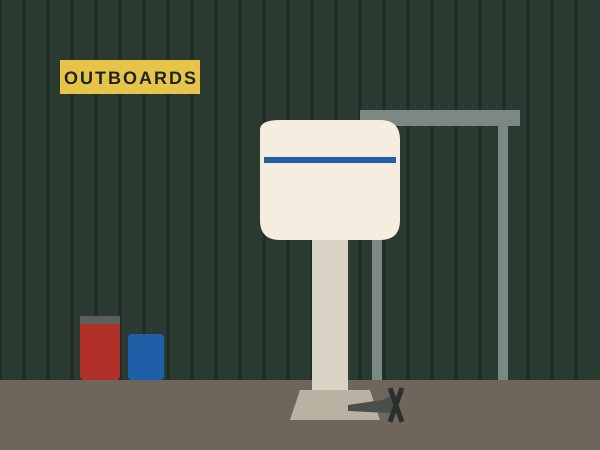
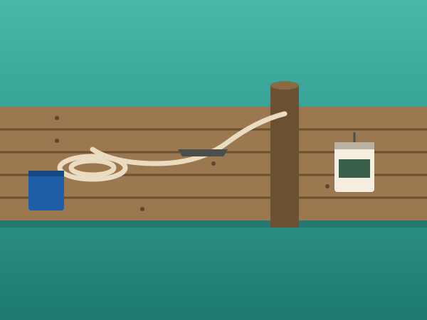
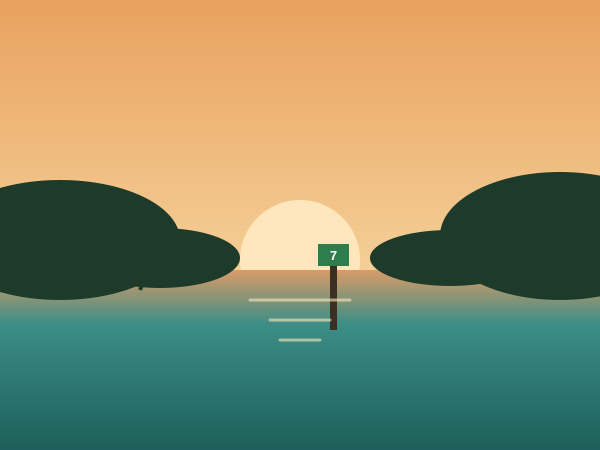

Home / The Yard
Behind the green tin
The Yard
No drone footage, no stock photos. Just a regular day at a regular boat yard. Mostly regular.




A day in the yard
How it usually goes
- Coffee. Pelicans on the pilings.
- Gate opens. First calls for launches.
- Forklift busy. Service bay busier.
- Lunch on the dock. Cuban sandwiches.
- Boats come back. Wash-downs start.
- Gate closes. Mostly.
Pinned by the office door
Bulletin board
Take a number. Leave a number. Don't take the thumbtacks.
Lost: one dinghy.
Found: one dinghy.
Not the same dinghy.
Found: one dinghy.
Not the same dinghy.
For sale: trolling motor. Barely trolled. Ask at the counter.
Whoever keeps parking in front of the forklift: we know.
Friday: sangria on the back deck. Bring your own cup. — Lori
Rack 14 is reserved.
Don't ask who for.
Don't ask who for.